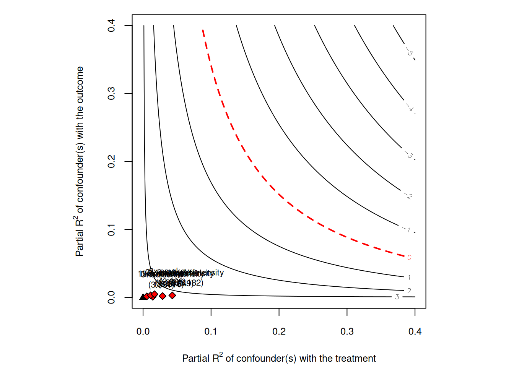

5 Sensitivity Analysis
The previous chapters often treat identification as yes or no. Applied work is usually less clean. We may believe the adjustment set is good, but still worry about some remaining confounding. Sensitivity analysis asks a practical question: how strong would unmeasured confounding have to be to change the conclusion?
Related reading: An extended treatment of the Cinelli-Hazlett robustness value and benchmark interpretations appears in the companion blog chapter on sensitivity analysis of Topics on Econometrics and Causal Inference.
Here I use three methods:
- Cinelli-Hazlett (2020) omitted-variable bias bounds — for OLS regression estimates, quantifies how strong an omitted variable would need to be (in terms of partial \(R^2\) with treatment and outcome) to bring the estimate to zero.
- E-values (VanderWeele-Ding 2017) — for risk ratios, the minimum strength of association (on the risk-ratio scale) that an unmeasured confounder would need with both treatment and outcome to fully explain the observed association.
- Rosenbaum bounds — for matched estimators, the magnitude of non-random treatment assignment within matched pairs that would render the test result insignificant.
5.1 The NHEFS smoking-cessation example
We use the National Health and Nutrition Examination Survey I Epidemiologic Follow-up Study (NHEFS) data — the same dataset used in the applied DAG-workflow chapter. The question: what is the effect of quitting smoking (qsmk) on weight gain over 10 years (wt82_71)?
n = 1566Treated (quit smoking) = 403Mean weight gain (treated): 4.53 kgMean weight gain (untreated): 1.98 kgA naive comparison says quitters gained \(\approx\) 2.5 kg more than non-quitters, but smokers and quitters differ on many baseline characteristics. Adjust for the standard set of confounders (age, sex, race, education, baseline weight, smoking intensity, exercise, activity):
| term | estimate | std.error | statistic | p.value |
|---|---|---|---|---|
| (Intercept) | 16.090 | 1.508 | 10.673 | 0.000 |
| qsmk | 3.381 | 0.441 | 7.665 | 0.000 |
| sex1 | -1.429 | 0.456 | -3.131 | 0.002 |
Adjusted ACE estimate: 3.381 kg (SE = 0.441)The adjusted estimate is around 3.4 kg, larger than the unadjusted difference. But the identification assumption requires that we have controlled for all relevant confounders. What if we missed one — say, a propensity to gain weight that also correlates with quitting decisions? Sensitivity analysis addresses this directly.
5.2 Cinelli-Hazlett OVB bounds
sensemakr implements the Cinelli-Hazlett (2020) approach. The key inputs are:
- a fitted regression
- the treatment variable name
- one or more benchmark covariates whose strength serves as a reference for how strong a hypothetical unobserved confounder might be
Sensitivity Analysis to Unobserved Confounding
Model Formula: wt82_71 ~ qsmk + sex + age + race + education + smokeintensity +
smokeyrs + exercise + active + wt71
Null hypothesis: q = 1 and reduce = TRUE
-- This means we are considering biases that reduce the absolute value of the current estimate.
-- The null hypothesis deemed problematic is H0:tau = 0
Unadjusted Estimates of 'qsmk':
Coef. estimate: 3.3812
Standard Error: 0.4411
t-value (H0:tau = 0): 7.6649
Sensitivity Statistics:
Partial R2 of treatment with outcome: 0.0365
Robustness Value, q = 1: 0.1767
Robustness Value, q = 1, alpha = 0.05: 0.1347
Verbal interpretation of sensitivity statistics:
-- Partial R2 of the treatment with the outcome: an extreme confounder (orthogonal to the covariates) that explains 100% of the residual variance of the outcome, would need to explain at least 3.65% of the residual variance of the treatment to fully account for the observed estimated effect.
-- Robustness Value, q = 1: unobserved confounders (orthogonal to the covariates) that explain more than 17.67% of the residual variance of both the treatment and the outcome are strong enough to bring the point estimate to 0 (a bias of 100% of the original estimate). Conversely, unobserved confounders that do not explain more than 17.67% of the residual variance of both the treatment and the outcome are not strong enough to bring the point estimate to 0.
-- Robustness Value, q = 1, alpha = 0.05: unobserved confounders (orthogonal to the covariates) that explain more than 13.47% of the residual variance of both the treatment and the outcome are strong enough to bring the estimate to a range where it is no longer 'statistically different' from 0 (a bias of 100% of the original estimate), at the significance level of alpha = 0.05. Conversely, unobserved confounders that do not explain more than 13.47% of the residual variance of both the treatment and the outcome are not strong enough to bring the estimate to a range where it is no longer 'statistically different' from 0, at the significance level of alpha = 0.05.
Bounds on omitted variable bias:
--The table below shows the maximum strength of unobserved confounders with association with the treatment and the outcome bounded by a multiple of the observed explanatory power of the chosen benchmark covariate(s).
Bound Label R2dz.x R2yz.dx Treatment Adjusted Estimate Adjusted Se
1x smokeintensity 0.0143 0.0010 qsmk 3.3157 0.4442
2x smokeintensity 0.0287 0.0020 qsmk 3.2492 0.4473
3x smokeintensity 0.0430 0.0029 qsmk 3.1817 0.4504
1x smokeyrs 0.0056 0.0015 qsmk 3.3299 0.4422
2x smokeyrs 0.0112 0.0031 qsmk 3.2783 0.4431
3x smokeyrs 0.0168 0.0046 qsmk 3.2264 0.4440
Adjusted T Adjusted Lower CI Adjusted Upper CI
7.4636 2.4443 4.1871
7.2641 2.3718 4.1266
7.0640 2.2982 4.0652
7.5308 2.4626 4.1972
7.3989 2.4092 4.1474
7.2667 2.3555 4.0973The summary tells us:
- Robustness value (RV): the minimum strength of association (in terms of partial \(R^2\)) that an unmeasured confounder would need with both the treatment and the outcome to reduce the estimate to zero. Higher = more robust.
- RV_q: the strength needed to “explain away” a fraction \(q\) of the estimate (here \(q = 1\) means complete explanation).
- Benchmark comparisons: how the RV compares to multiples of the observed covariates.
plot(sens)
The contour plot shows how strong an unobserved confounder would have to be with the treatment and outcome to reduce the estimate to zero. The benchmark dots compare that hypothetical confounder to observed covariates.
5.3 E-values for risk ratios
For binary outcomes and risk-ratio-type estimands, VanderWeele and Ding (2017) propose the E-value: the minimum strength of association on the risk-ratio scale that an unmeasured confounder would need to have with both the treatment and the outcome to fully explain the observed risk ratio.
To illustrate, dichotomize weight gain (“any” gain vs no gain) and fit a risk-ratio model:
nhefs$gain <- as.numeric(nhefs$wt82_71 > 0)
rr_fit <- glm(gain ~ qsmk + sex + age + race + education + smokeintensity +
smokeyrs + exercise + active + wt71,
data = nhefs, family = poisson(link = "log"))
rr_summary <- tidy(rr_fit, exp = TRUE, conf.int = TRUE)
rr_est <- exp(coef(rr_fit)["qsmk"])
# The Poisson likelihood is misspecified for a binary outcome (the Zou 2004
# log-binomial-via-Poisson trick), so the model-based variance is wrong.
# Use robust (sandwich/HC) standard errors for the RR confidence interval.
rr_ci <- lmtest::coefci(rr_fit, parm = "qsmk",
vcov. = sandwich::vcovHC(rr_fit, type = "HC0"))
rr_lo <- exp(rr_ci[1])
rr_hi <- exp(rr_ci[2])
cat(sprintf("Adjusted RR (quit vs not): %.3f [%.3f, %.3f]\n",
rr_est, rr_lo, rr_hi))Adjusted RR (quit vs not): 1.218 [1.135, 1.307]ev <- evalues.RR(est = rr_est, lo = rr_lo, hi = rr_hi)
print(ev) point lower upper
RR 1.217702 1.134911 1.306534
E-values 1.732578 1.526206 NAThe E-value reports two numbers:
- E-value (point estimate): an unmeasured confounder would need to be associated with both treatment and outcome by risk ratios of at least this value, above and beyond the measured confounders, to fully explain away the observed effect.
- E-value (confidence interval): the minimum strength needed to shift the lower confidence bound to 1.
An E-value much greater than 1 suggests the result is hard to explain by unmeasured confounding. An E-value close to 1 means a modest unmeasured confounder could overturn the conclusion.
The useful part of the E-value is that it is on the risk-ratio scale. It can be explained without specifying a model for the unobserved confounder.
5.4 Rosenbaum bounds (matched estimators)
For matching estimators, Rosenbaum bounds (Rosenbaum 2002) provide a sensitivity analysis based on the maximum deviation from random assignment within matched pairs.
Suppose units in a matched pair are observationally identical, but one might still be more likely than the other to receive treatment due to unobserved factors. Let \(\Gamma\) bound the ratio of treatment odds between the two units of a pair: \(\Gamma = 1\) means matched pairs are perfectly randomised (both units equally likely to be the treated one); \(\Gamma = 2\) means hidden bias could make one unit’s odds of treatment up to twice the other’s.
Rosenbaum bounds compute the range of \(p\)-values for the matched test under each value of \(\Gamma\). The critical \(\Gamma\) is the smallest value at which the test becomes insignificant.
Here is a worked example using simple pair matching on propensity score and a Wilcoxon signed-rank test (the original Rosenbaum bound calculation):
# Estimate propensity score
ps_fit <- glm(qsmk ~ sex + age + race + education + smokeintensity +
smokeyrs + exercise + active + wt71,
data = nhefs, family = binomial)
nhefs$ps <- predict(ps_fit, type = "response")
# Simple 1:1 nearest-neighbour matching on propensity score
treated_idx <- which(nhefs$qsmk == 1)
control_idx <- which(nhefs$qsmk == 0)
set.seed(1)
matched_pairs <- data.frame(t_idx = integer(), c_idx = integer())
available_controls <- control_idx
for (ti in treated_idx) {
if (length(available_controls) == 0) break
dists <- abs(nhefs$ps[ti] - nhefs$ps[available_controls])
best <- which.min(dists)
matched_pairs <- rbind(matched_pairs,
data.frame(t_idx = ti,
c_idx = available_controls[best]))
available_controls <- available_controls[-best]
}
# Compute paired differences in outcome
paired_diff <- nhefs$wt82_71[matched_pairs$t_idx] -
nhefs$wt82_71[matched_pairs$c_idx]
cat(sprintf("N matched pairs: %d\n", nrow(matched_pairs)))N matched pairs: 403Mean paired difference (matched ATT): 2.926 kg# Rosenbaum bound calculation: range of p-values for Wilcoxon signed-rank
# under each Gamma. We compute this directly rather than using a package
# to keep the dependency footprint small.
rosenbaum_pvalue <- function(diffs, gamma) {
# The Wilcoxon signed-rank protocol discards exact-zero paired differences
# before ranking (a zero carries no information about the sign) and
# reduces the effective sample size accordingly; including them would
# skew both the rank sum and its null variance.
diffs <- diffs[diffs != 0]
abs_d <- abs(diffs)
signs <- sign(diffs)
ranks <- rank(abs_d)
# Under Gamma, P(positive sign) is bounded between 1/(1+Γ) and Γ/(1+Γ).
# Upper-bound p-value: assume P(positive) = Γ/(1+Γ) (against null of zero)
p_pos_upper <- gamma / (1 + gamma)
# Test statistic: sum of positive ranks
T_obs <- sum(ranks[signs > 0])
n <- length(diffs)
mu_upper <- p_pos_upper * sum(ranks)
var_upper <- p_pos_upper * (1 - p_pos_upper) * sum(ranks^2)
z <- (T_obs - mu_upper) / sqrt(var_upper)
1 - pnorm(z)
}
gammas <- seq(1, 4, by = 0.25)
pvals <- sapply(gammas, function(g) rosenbaum_pvalue(paired_diff, g))
result <- tibble(Gamma = gammas, p_value_upper = pvals)
knitr::kable(result, digits = 4,
caption = "Upper-bound p-values from Rosenbaum sensitivity analysis")| Gamma | p_value_upper |
|---|---|
| 1.00 | 0.0000 |
| 1.25 | 0.0004 |
| 1.50 | 0.0334 |
| 1.75 | 0.2905 |
| 2.00 | 0.7106 |
| 2.25 | 0.9374 |
| 2.50 | 0.9921 |
| 2.75 | 0.9993 |
| 3.00 | 1.0000 |
| 3.25 | 1.0000 |
| 3.50 | 1.0000 |
| 3.75 | 1.0000 |
| 4.00 | 1.0000 |
The critical \(\Gamma\) is the value at which the upper-bound \(p\)-value crosses 0.05. In the table above, locate where this happens — if the critical \(\Gamma\) is around 2 or higher, the result is robust to moderate hidden bias. If it is close to 1, even small unmeasured confounding could overturn the conclusion.
sig_idx <- which(result$p_value_upper > 0.05)
critical_gamma <- if (length(sig_idx) > 0) result$Gamma[min(sig_idx)] else NA
if (is.na(critical_gamma)) {
cat(sprintf("No Gamma up to %.2f pushed the p-value above 0.05 -- the result is robust across the whole grid tested; extend `gammas` to find the true crossing.\n", max(result$Gamma)))
} else {
cat(sprintf("Critical Gamma (p > 0.05): %.2f\n", critical_gamma))
}Critical Gamma (p > 0.05): 1.75This reports the first value on the 0.25 grid at which significance is lost; the actual crossing lies between this value and the preceding grid point (a finer grid, or interpolation, would locate it more precisely — the convention in applied work is often to report the largest \(\Gamma\) at which significance is retained).
5.5 What about partial identification?
When sensitivity analysis shows the point estimate is fragile, partial identification is often the next step. Instead of one estimate, report bounds under weaker assumptions.
The Manski (1990) “no-assumption” bounds say:
\[ \text{ATE} \in \Big[\; \mathbb{E}[Y|D{=}1]P(D{=}1) - \big(\mathbb{E}[Y|D{=}0]P(D{=}0) + K\,P(D{=}1)\big),\;\; \big(\mathbb{E}[Y|D{=}1]P(D{=}1) + K\,P(D{=}0)\big) - \mathbb{E}[Y|D{=}0]P(D{=}0) \;\Big]. \]
Each potential-outcome mean is split by the law of total expectation, filling in the unobserved arm with its worst/best case. With outcomes bounded in \(Y \in [0, K]\), this is a single interval of width exactly \(K\) — bounded, but often too wide to be useful. Tighter bounds come from adding structure to a specific problem: Lee (2009) bounds address sample selection/attrition (the outcome is observed only for selected units) by combining random assignment with monotone selection and trimming the over-selected arm. For IV settings, Mourifié and Wan (2017) provide a test of the LATE identifying assumptions (instrument validity plus monotonicity).
These bounds usually complement a point estimate. They are useful when the point estimate depends too much on an untestable assumption.
5.6 Summary
- Sensitivity analysis asks how strong hidden confounding must be to change the result.
- Cinelli-Hazlett bounds are useful for regression estimates.
- E-values are useful for risk ratios.
- Rosenbaum bounds are useful for matched pairs.
- Observational causal estimates should usually include at least one sensitivity analysis.